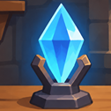

Артефакт «Изнаночка мира» раскрывает истинный порядок вещей: как ни крути, а мироздание устроено вокруг человека, а не наоборот. После активации артефакта действительность начинает перестраиваться вокруг владельца, превращая его волю, решения и намерения в силу, способную возродить клан, открыть новые пути для его развития и изменить положение владельца в мироздании. Постепенно тот, кто прежде лишь наблюдал за происходящим, сам становится частью преобразований — точкой, вокруг которой начинает меняться привычный порядок вещей. А чтобы вся эта космологическая затея не закончилась сборкой чего-нибудь совершенно непредусмотренного, здесь собраны компоненты артефакта, соответствия камней и масел, перечень монет по месяцам и дням недели, а также последовательность сборки. Всё по порядку, без лишних загадок и с расчётом на то, что вселенная оценит проделанную работу.
| № | Камень | Цвет | Масло |
|---|---|---|---|
| 1 | Лунный камень | Зел. | Жасмин |
| 2 | Соколиный глаз | Зел. | Можжевельник |
| 3 | Диопсид | Красн. | Ветивер |
| 4 | Аметрин | Красн. | Лотос |
| 5 | Лабрадорит | Красн. | Мирра |
| 6 | Родохрозит | Чёрн. | Роза дамасская |
| 7 | Снежный обсидиан | Чёрн. | Пачули |
| 8 | Пейзажная яшма | Чёрн. | Сандаловое дерево |
| 9 | Хиастолит | Син. | Ирис |
| 10 | Селенит | Син. | Ладан |
| 11 | Шунгит | Син. | -нет- |
| 12 | Шунгит | Зел. | -нет- |
Зелёный
Пало Санто указывает на Лунный камень — средний в тройке.
Красный
Следующая тройка по часовой стрелке.
Чёрный
Сектор Снежного обсидиана и очина пера рядом с ним.
Синий
Четвёртая тройка по часовой стрелке.
Белый цвет: боковая поверхность и поддон.
Рекомендация: акриловую краску наноси тонкими слоями, просушивая при 20–25 °C. После полного высыхания краски нанеси 2 слоя глянцевого акрилового лака. Температура нанесения и сушки лака — такая же, как для краски. Обеспечь умеренную вентиляцию без прямого обдува поверхности. Учитывай, что лак может оставаться липким и не высыхать даже спустя неделю. Не наноси следующие слои и не эксплуатируй изделие, пока покрытие не высохнет. Днище платформы окрашивается и лакируется отдельно по той же технологии.
Соберите по одной монете на каждый месяц и день недели. Если монета отмечена как повтор и соответствующая монета уже есть в коллекции, её можно считать собранной — дополнительная покупка не требуется, а галочку можно считать поставленной. Отметки на собранных монетах сохраняются в этом браузере.
Для позиционирования артефакта используется компас с вращающимся лимбом: поверните лимб так, чтобы его отметка N оказалась на 129° внешней шкалы (почти на юго-востоке, с отклонением на 6°), и зафиксируйте лимб клеем. Если нужный угол трудно определить по делениям, воспользуйтесь распечатанным шаблоном на 360° с разметкой по градусам. Положите компас на присоску артефакта, совместите статичные отметки севера на корпусах артефакта и компаса и вращайте артефакт, пока отметка N на лимбе не совпадёт с северным концом магнитной стрелки.
После настройки артефакта компас не становится ненужной безделушкой: помимо ориентирования на особый север, он продолжает работать уже с хозяином, последовательно выводя его из присутствия в обитание, из обитания в нахождение, из нахождения в своё исконое местоположение — что прилично расширяет кругозор привычного восприятия. Поэтому не удивляйтесь, если окажетесь в другой ветке вероятности мироздания, где люди из вашего окружения пошли по совершенно иному пути развития, а привычный мир сложился совсем иначе, к которому теперь придётся привыкать по новому, и в том числе проверять и корректировать новую позицию артефакта.
Артефакт обладает различными режимами работы, которые можно настраивать через зеркало, нанося на его поверхность специальные знаки — черти. Каждый знак задаёт определённый принцип воздействия на развитие клана, влияя на характер происходящих изменений, их направление и масштаб.
Система включает четыре уровня чертей, различающихся энергетическими требованиями. Младшие отвечают за отдельные аспекты развития клана, старшие определяют характер процессов, главные задают их направление, а заглавный охватывает развитие в целом. При выборе чертя необходимо соотносить её уровень с собственными возможностями и способностью обеспечить необходимую энергией работу артефакта. Оценка этих возможностей формируется практическим путём, по мере накопления опыта и участников клана. Если поддержание выбранного режима оказывается не по силам, чертя следует стереть.